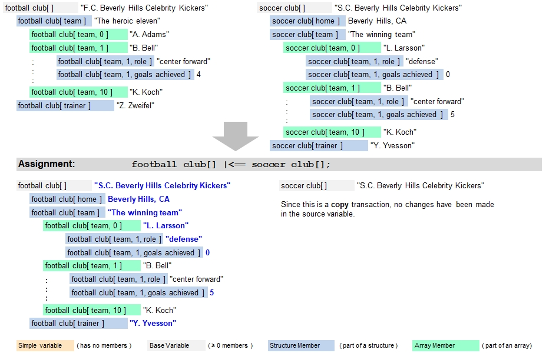

Introduction
Transactions with the + prefix function similarily like the & prefix, but following differences apply where the variable tree in the destination table or variable will be extended to fit the data:
- Existing structure members will be overwritten
- Missing structure members will be created and the data will be written to them
- Existing array members will be overwritten
- Existing arrays will be extended with additional members if not all data can fit into the already existing members
- If the destination is a table, then additional columns may be added to fit the data (dependings on how the target table row is specified)
- New arrays and/or structures will be created if they are still missing in the destination in order to fit all data to be transferred
Typical Example
